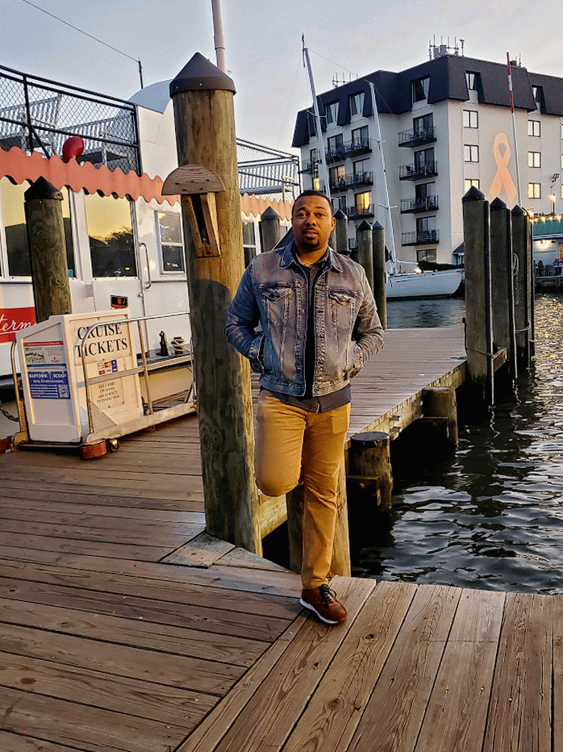

Image Description
The interesting thing about this image is that the google photos app on my phone generated this unique GIF image file. On a recent trip to Annapolis harbor, I was able several shots while trying to capture the perfect moment. A couple of days went by, and I was going through my pictures and I stumbled upon this file. I was so captivated by the unique animation and the way it captured the essence of the moment. This image captures a serene evening at the Annapolis harbor, taken on September 15, 2024, at around 7:45 PM Eastern Time. The sky is painted with warm hues of orange and pink as the sun sets, casting a beautiful glow over the calm waters of the harbor. The boats are gently swaying in the water, creating a peaceful and tranquil atmosphere. The image evokes a sense of relaxation and contentment, reminding us of the simple pleasures of life and the beauty of nature.
Image File Type Information
The image file type is GIF format. It has a resolution of 4000X3000 pixels and a file size of approximately 9.8 MB. It was captured using a motorola motorola edge plus 2023.
Why I chose this image
I chose this image because it reminds me of a memorable evening spent at the Annapolis harbor, where I enjoyed the stunning view of the sunset over the water. The image captures the essence of that moment and the beauty of the location, making it a perfect representation of my experience.
Image Source
This image was taken by me, Emmanuel Onyike, on September 15, 2024, at the Annapolis harbor. I used my motorola edge plus 2023 to capture this breathtaking view of the sunset over the water. The image is stored in JPEG format and has a resolution of 4000X3000 pixels, with a file size of approximately 9.8 MB.